CHEBFUN GUIDE 4: CHEBFUN AND APPROXIMATION THEORY
Lloyd N. Trefethen, November 2009, revised February 2011
Contents
4.1 Chebyshev series and interpolants
Chebfun is founded on the mathematical subject of approximation theory, and in particular, on Chebyshev series and interpolants. Conversely, it provides a simple environment in which to demonstrate these approximants and other approximation ideas.
The history of "Chebyshev technology" goes back to the 19th century Russian mathematician P. L. Chebyshev (1821-1894) and his mathematical descendants such as Zolotarev and Bernstein (1880-1968). These men realized that just as Fourier series provide an efficient way to represent a smooth periodic function, series of Chebyshev polynomials can do the same for a smooth nonperiodic function. A number of excellent textbooks and monographs have been published on approximation theory, including [Davis 1963], [Cheney 1966], [Meinardus 1967], [Lorentz 1986], and Powell [Powell, 1981], and in addition there are books devoted entirely to Chebyshev polynomials, including [Rivlin 1974] and [Mason & Handscomb 2003]. A Chebfun-based book on approximation theory and its computational applications is in preparation [Trefethen 2012].
From the dates of publication above it will be clear that approximation theory flourished in the early computer era, and in the 1950s and 1960s a number of numerical methods were developed based on Chebyshev polynomials by Lanczos [Lanczos 1957], Fox [Fox & Parker 1966], Clenshaw, Elliott, Mason, Good, and others. The Fast Fourier Transform came in 1965 and Salzer's barycentric interpolation formula for Chebyshev points in 1972 [Salzer 1972]. Then in the 1970s Orszag and Gottlieb introduced spectral methods, based on the application of Chebyshev and Fourier technology to the solution of PDEs. The subject grew rapidly, and it is in the context of spectral methods that Chebyshev techniques are best known today [Boyd 2001], [Trefethen 2000], [Canuto et al. 2006/7].
We must be clear about terminology. We shall rarely use the term Chebyshev approximation, for that expression refers specifically to an approximation that is optimal in the minimax sense. Chebyshev approximations are fascinating, and in Section 4.6 we shall see that Chebfun makes it easy to compute them, but the core of Chebfun is built on the different techniques of polynomial interpolation in Chebyshev points and expansion in Chebyshev polynomials. These approximations are not quite optimal, but they are nearly optimal and much easier to compute.
By Chebyshev points we shall mean as usual the set of points in [-1,1] defined by
x(j) = -cos(j pi/N), 0 <= j <= N,
where N is an integer >= 1. (If N=0, we take x(0)=0.) Through any data values f(j) at these points there is a unique polynomial interpolant p(x) of degree <= N, which we call the Chebyshev interpolant. In particular, if the data are f(j) = (-1)^(n-j), then p(x) is T_N, the Nth Chebyshev polynomial, which can also be defined by the formula T_N(x) = cos(N acos(x)). In Chebfun, the command "chebpoly(N)" returns a chebfun corresponding to T_N, and "poly" returns coefficients in the monomial basis 1,x,x^2,.... Thus we can print the coefficients of the first few Chebyshev polynomials like this:
for N = 0:8 disp(poly(chebpoly(N))) end
1
1 0
2 0 -1
4 0 -3 0
8 0 -8 0 1
16 0 -20 0 5 0
32 0 -48 0 18 0 -1
64 0 -112 0 56 0 -7 0
128 0 -256 0 160 0 -32 0 1
Note that that output of "poly" follows the pattern for Matlab's standard "poly" command: it is a row vector, and the high-order coefficients come first. Thus, for example, the fourth row above tells us that T_3(x) = 4x^3 - 3x.
Here are plots of T_2, T_3, T_15, and T_50.
subplot(2,2,1), plot(chebpoly(2)) subplot(2,2,2), plot(chebpoly(3)) subplot(2,2,3), plot(chebpoly(15)) subplot(2,2,4), plot(chebpoly(50))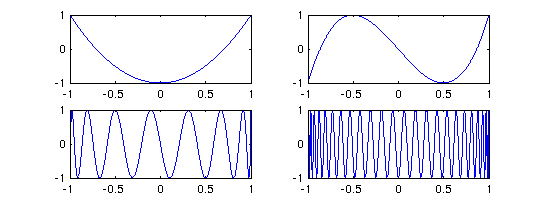
A Chebyshev series is an expansion
f(x) = SUM_{k=0}^infty a_k T_k(x),and the a_k are known as Chebyshev coefficients. So long as f is continuous and at least a little bit smooth (Lipschitz continuity is enough), it has a unique expansion of this form, which converges absolutely and uniformly, and the coefficients are given by the integral
a_k = (2/pi) INT_{-1}^1 f(x) T_k(x) dx / sqrt(1-x^2).except that for k=0, the constant changes from 2/pi to 1/pi. One way to approximate a function is to form the polynomials obtained by truncating its Chebyshev expansion,
f_N(x) = SUM_{k=0}^N a_k T_k(x).This isn't quite what Chebfun does, however, since it does not compute exact Chebyshev coefficients. Instead Chebfun is based on Chebyshev interpolants, which can also be regarded as finite series in Chebyshev polynomials for some coefficients c_k:
p_N(x) = SUM_{k=0}^N c_k T_k(x).Each coefficient c_k will converge to a_k as N->infty (apart from the effects of rounding errors), but for finite N, c_k and a_k are different. The system actually stores a function by its values at the Chebyshev points rather than its Chebyshev coefficients, but this hardly matters to the user, and both representations are exploited for various purposes internally in the system.
4.2 chebpoly and poly
Throughout this section, we must be sure to use the "factory" setting
splitting off
since our purpose is to explore global Chebyshev interpolants without any division into subintervals.
We have just seen that the command chebpoly(N) returns a chebfun corresponding to the Chebyshev polynomial T_N. Conversely, if f is a chebfun, then chebpoly(f) is the vector of its Chebyshev coefficients. For example, here are the Chebyshev coefficients of x^3:
x = chebfun('x');
c = chebpoly(x.^3)
c =
Columns 1 through 3
0.250000000000000 0 0.750000000000000
Column 4
0
Like "poly", "chebpoly" returns a row vector with the high-order coefficients first. Thus this computation reveals the identity x^3 = (1/4)*T_3(x) + (3/4)*T_1(x).
If we apply chebpoly to a function that is not "really" a polynomial, we will usually get a vector whose first entry (i.e., highest order) is just above machine precision. This reflects the adaptive nature of the Chebfun constructor, which always seeks to use a minimal number of points.
chebpoly(sin(x))
ans =
Columns 1 through 3
0.000000000000039 0 -0.000000000023960
Columns 4 through 6
0 0.000000010498500 0
Columns 7 through 9
-0.000003004651635 0 0.000499515460422
Columns 10 through 12
0 -0.039126707965337 0
Columns 13 through 14
0.880101171489867 0
Of course, machine precision is defined relative to the scale of the function:
chebpoly(1e100*sin(x))
ans =
1.0e+99 *
Columns 1 through 3
0.000000000000386 0 -0.000000000239601
Columns 4 through 6
0 0.000000104985004 0
Columns 7 through 9
-0.000030046516349 0 0.004995154604224
Columns 10 through 12
0 -0.391267079653368 0
Columns 13 through 14
8.801011714898671 0
By using "poly" we can print the coefficients of such a chebfun in the monomial basis. Here for example are the coefficients of the Chebyshev interpolant of exp(x) compared with the Taylor series coefficients:
cchebfun = flipud(poly(exp(x))');
ctaylor = 1./gamma(1:length(cchebfun))';
disp(' chebfun Taylor')
disp([cchebfun ctaylor])
chebfun Taylor 1.000000000000000 1.000000000000000 1.000000000000001 1.000000000000000 0.500000000000005 0.500000000000000 0.166666666666635 0.166666666666667 0.041666666666629 0.041666666666667 0.008333333333643 0.008333333333333 0.001388888888968 0.001388888888889 0.000198412697004 0.000198412698413 0.000024801587344 0.000024801587302 0.000002755735291 0.000002755731922 0.000000275572862 0.000000275573192 0.000000025047742 0.000000025052108 0.000000002088009 0.000000002087676 0.000000000163485 0.000000000160590 0.000000000011426 0.000000000011471
The fact that these differ is not an indication of an error in the Chebfun approximation. On the contrary, the Chebfun coefficients do a better job of approximating than the truncated Taylor series. If f were a function like 1/(1+25x^2), the Taylor series would not converge at all.
4.3 chebfun(...,N) and the Gibbs phenomenon
We can examine the approximation qualities of Chebyshev interpolants by means of a command of the form "chebfun(...,N)". When an integer N is specified in this manner, it indicates that a Chebyshev interpolant is to be constructed of precisely length N rather than by the usual adaptive process.
Let us begin with a function that cannot be well approximated by polynomials, the step function sign(x). To start with we interpolate it in 10 or 20 points, taking N to be even to avoid including a value 0 at the middle of the step.
f = chebfun('sign(x)',10); subplot(1,2,1), plot(f,'.-'), grid on f = chebfun('sign(x)',20); subplot(1,2,2), plot(f,'.-'), grid on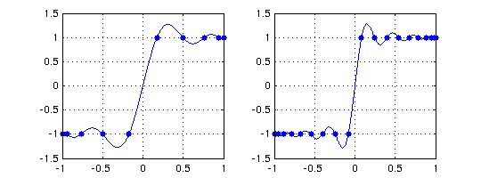
There is an overshoot problem here, known as the Gibbs phenomenon, that does not go away as N -> infty. We can zoom in on the overshoot region by resetting the axes:
subplot(1,2,1), axis([0 .4 .5 1.5]) subplot(1,2,2), axis([0 .2 .5 1.5])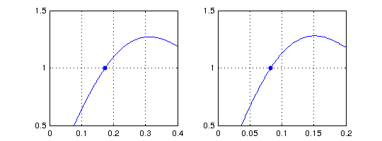
Here are analogous results with N=100 and 1000.
f = chebfun('sign(x)',100); subplot(1,2,1), plot(f,'.-'), grid on, axis([0 .04 .5 1.5]) f = chebfun('sign(x)',1000); subplot(1,2,2), plot(f,'.-'), grid on, axis([0 .004 .5 1.5])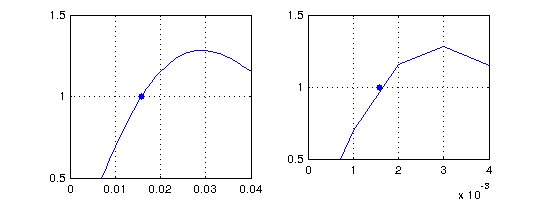
The second plot is jagged, not because there is anything wrong with the underlying chebfun but because we have zoomed in very closely on the result of a "plot" command. One way to get it right is by using Chebfun's { } feature, which enables one to construct a chebfun corresponding to a subinterval. (Another way would be to use the 'interval' flag in the "plot" command.)
clf subplot(1,2,2), plot(f,'.'), grid on, axis([0 .004 .5 1.5]) hold on, plot(f{0,.004})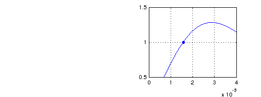
What is the amplitude of the Gibbs overshoot for Chebyshev interpolation of a step function? We can find out by using "max":
for N = 2.^(1:8) gibbs = max(chebfun('sign(x)',N)); fprintf('%5d %13.8f\n', N, gibbs) end
2 1.00000000
4 1.18807518
8 1.26355125
16 1.27816423
32 1.28131717
64 1.28204939
128 1.28222585
256 1.28226917
This gets a bit slow for larger N, but knowing that the maximum occurs around x = 3/N, we can speed it up by repeating the { } trick above.
for N = 2.^(4:12) f = chebfun('sign(x)',N); fprintf('%5d %13.8f\n', N, max(f{0,5/N})) end
16 1.27816423 32 1.28131717 64 1.28204939 128 1.28222585 256 1.28226917 512 1.28227990 1024 1.28228257 2048 1.28228323 4096 1.28228340
The overshoot converges to a number 1.282283455775.... [Helmberg & Wagner 1997].
4.4 Smoothness and rate of convergence
The most basic principle in approximation theory is this: the smoother the function, the faster the convergence as N -> infty. What this means for Chebfun is that so long as a function is twice continuously differentiable, it can usually be approximated to machine precision for a workable value of N, even without subdivision of the interval.
After the step function, a function with "one more derivative" of smoothness would be the absolute value. Here if we interpolate in N points, the errors decrease at the rate O(N^(-1)). For example:
clf f10 = chebfun('abs(x)',10); subplot(1,2,1), plot(f10,'.-'), grid on f20 = chebfun('abs(x)',20); subplot(1,2,2), plot(f20,'.-'), grid on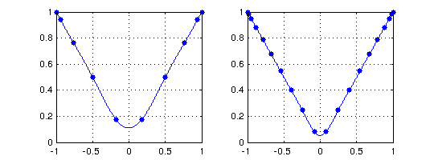
Chebfun has no difficulty computing interpolants of much higher order:
f100 = chebfun('abs(x)',100); subplot(1,2,1), plot(f100), grid on f1000 = chebfun('abs(x)',1000); subplot(1,2,2), plot(f1000), grid on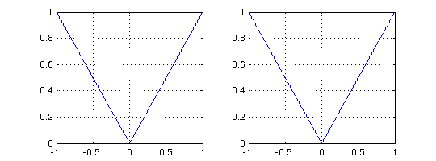
Such plots look good to the eye, but they do not achieve machine precision. We can confirm this by using "splitting on" to compute a true absolute value and then measuring some norms.
fexact = chebfun('abs(x)','splitting','on'); err10 = norm(f10-fexact,inf) err100 = norm(f100-fexact,inf) err1000 = norm(f1000-fexact,inf)
err10 = 0.111111111111111 err100 = 0.010101010101010 err1000 = 0.001001001001001
Notice the clean linear decrease of the error as N increases.
If f is a bit smoother, polynomial approximation to machine precision becomes practical:
length(chebfun('abs(x).*x')) length(chebfun('abs(x).*x.^2')) length(chebfun('abs(x).*x.^3')) length(chebfun('abs(x).*x.^4'))
ans =
30222
ans =
4311
ans =
2034
ans =
549
Of course, these particular functions would be easily approximated by piecewise smooth chebfuns.
It is interesting to plot convergence as a function of N. Here is an example from [Battles & Trefethen 2004] involving the next function from the sequence above.
s = 'abs(x).^5'; exact = chebfun(s,'splitting','off'); NN = 1:100; e = []; for N = NN e(N) = norm(chebfun(s,N)-exact); end clf subplot(1,2,1) loglog(e), ylim([1e-10 10]), title('loglog scale') hold on, loglog(NN.^(-5),'--r'), grid on text(6,4e-7,'N^{-5}','color','r','fontsize',16) subplot(1,2,2) semilogy(e), ylim([1e-10 10]), grid on, title('semilog scale') hold on, semilogy(NN.^(-5),'--r'), grid on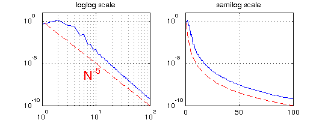
The figure reveals very clean convergence at the rate N^(-5). According to Theorem 2 of the next section, this happens because f has a fifth derivative of bounded variation.
Here is an example of a smoother function, one that is in fact analytic. According to Theorem 3 of the next section, if f is analytic, its Chebyshev interpolants converge geometrically. In this example we take f to be the Runge function, for which interpolants in equally spaced points would not converge at all (in fact they diverge exponentially -- see Section 4.7).
s = '1./(1+25*x.^2)'; exact = chebfun(s); for N = NN e(N) = norm(chebfun(s,N)-exact); end clf, subplot(1,2,1) loglog(e), ylim([1e-10 10]), grid on, title('loglog scale') c = 1/5 + sqrt(1+1/25); hold on, loglog(c.^(-NN),'--r'), grid on subplot(1,2,2) semilogy(e), ylim([1e-10 10]), title('semilog scale') hold on, semilogy(c.^(-NN),'--r'), grid on text(45,1e-3,'C^{-N}','color','r','fontsize',16)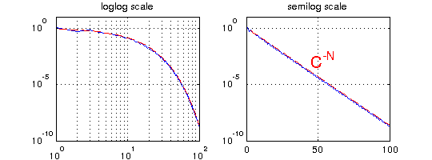
This time the convergence is equally clean but quite different in nature. Now the straight line appears on the semilogy axes rather than the loglog axes, revealing the geometric convergence.
4.5 Five theorems
The mathematics of Chebfun can be captured in five theorems about interpolants in Chebyshev points. The first three can be found in [Battles & Trefethen 2004], and all will be discussed in [Trefethen 2012]. Let f be a continuous function on [-1,1], and let p denote its interpolant in N Chebyshev points and p* its best degree N approximation with respect to the maximum norm .
The first theorem asserts that Chebyshev interpolants are "near-best" [Ehlich & Zeller 1966].
THEOREM 1. f - p <= (2 + (2/pi)log(N)) f - p* .
This theorem implies that even if N is as large as 100,000, one can lose no more than one digit by using p instead of p*. Whereas Chebfun will readily compute such a p, it is unlikely that anybody has ever computed a nontrivial p* for a value of N so large.
The next theorem asserts that if f is k times differentiable, roughly speaking, then the Chebyshev interpolants converge at the algebraic rate 1/N^k [Mastroianni & Szabados 1995].
THEOREM 2. If Let f, f', ..., f^(k-1) be absolutely continuous for some k >=1, and let f^(k) be a function of bounded variation. Then f - p = O(N^(-k)) as N -> infty.
Smoother than this would be a C-infty function, i.e. infinitely differentiable, and smoother still would be a function analytic on [-1,1], i.e., one whose Taylor series at each point of [-1,1] converges at least in a small neighborhood of that point. In such a case the convergence is geometric. The essence of the following theorem is due to Bernstein in 1912, though I do not know where an explicit statement first appeared in print.
THEOREM 3. If f is analytic and bounded in the "Bernstein ellipse" of foci 1 and -1 with semimajor and semiminor axis lengths summing to r, then f - p = O(r^(-N)) as N -> infty.
More precisely, if abs(f(z)) <= M in the ellipse, then the bound on the right can be taken as 4Mr^(-n)/(r-1).
The next theorem asserts that Chebyshev interpolants can be computed by the barycentric formula [Salzer 1972]. The notation SUM" denotes the sum from k=0 to k=N with both terms k=0 and k=N multiplied by 1/2.
THEOREM 4. p(x) = SUM" (-1)^k f(x_k)/(x-x_k) / SUM" (-1)^k/(x-x_k).
See [Berrut & Trefethen 2005] for information about barycentric interpolation.
The final theorem asserts that the barycentric formula has no difficulty with rounding errors. Our "theorem" is really just a placeholder; see [Higham 2004] for a precise statement and proof. Earlier work on this subject appeared in [Rack & Reimer 1982].
THEOREM 5. The barycentric formula of Theorem 4 is numerically stable.
This stability result may seem surprising when one notes that for x close to x_k, the barycentric formula involves divisions by numbers that are nearly zero. Nevertheless it is provably stable. If x is exactly equal to some x_k, then one bypasses the formula and returns the exact value p(x) = f(x_k).
4.6 Best approximations and the Remez algorithm
For practical computations, it is rarely worth the trouble to compute a best (minimax) approximation rather than simply a Chebyshev interpolant. Nevertheless best approximations are a beautiful and well-established idea, and it is certainly interesting to be able to compute them. Chebfun makes this possible with the command "remez", named after Evgeny Remez, who devised the standard algorithm for computing these approximations in 1934. This capability is due to Ricardo Pachon; see [Pachon & Trefethen 2009].
For example, here is a function on the interval [0,4] together with its best approximation by a polynomial of degree 20:
f = chebfun('sqrt(abs(x-3))',[0,4],'splitting','on'); p = remez(f,20); clf, plot(f,'b',p,'r'), grid on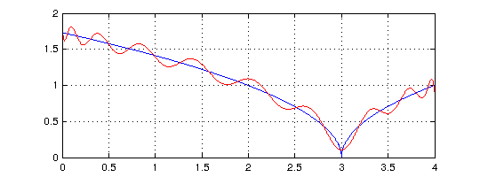
A plot of the error curve (p-f)(x) shows that it equioscillates between 20+2 = 22 alternating extreme values. Note that a second output argument from remez returns the error as well as the polynomial.
[p,err] = remez(f,20); plot(f-p,'m'), hold on plot([0 4],err*[1 1],'--k'), plot([0 4],-err*[1 1],'--k')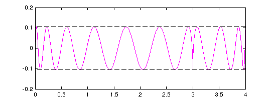
Let's add the error curve for the degree 20 (i.e. 21-point) Chebyshev interpolant to the same plot:
pinterp = chebfun(f,[0,4],21);
plot(f-pinterp,'b')
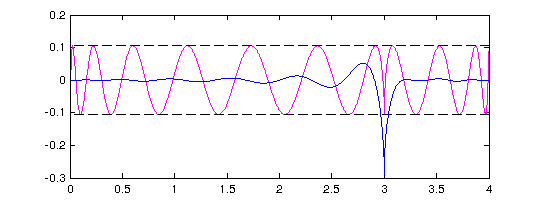 Notice that although the best approximation has a smaller maximum error, it is a worse approximation for almost all x.
Chebfun "remez" command can compute certain rational best approximants too, though it is somewhat fragile. If your function is smooth, a possibly more robust approach to computing best approximations is Caratheodory-Fejer approximation, implemented in the code "cf" due to Joris Van Deun [Van Deun & Trefethen 2011]. For example:
f = chebfun('exp(x)'); [p,q] = cf(f,5,5); r = p./q; err = norm(f-r,inf); clf, plot(f-r,'c'), hold on plot([-1 1],err*[1 1],'--k'), plot([-1 1],-err*[1 1],'--k') ylim(2e-13*[-1 1])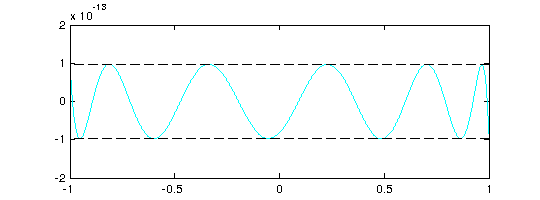
CF approximation often comes close to optimal for non-smooth functions too, provided you specify a fourth argument to tell the system on how fine a Chebyshev grid to sample:
f = abs(x-.3); [p,q,r_handle,lam] = cf(f,5,5,300); clf, plot(f-p./q,'c'), hold on plot([-1 1],lam*[1 1],'--k'), plot([-1 1],-lam*[1 1],'--k')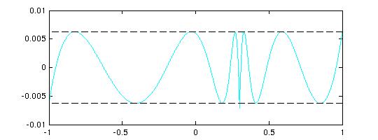
4.7 The Runge phenomenon
Chebfun is based on polynomial interpolants in Chebyshev points, not equispaced points. It has been known for over a century that the latter choice is disastrous, even for interpolation of smooth functions [Runge 1901]. One should never use equispaced polynomial interpolants for practical work (unless you will only need the result near the center of the interval of interpolation), but like best approximations, they are certainly interesting.
In Chebfun, we can compute them with the overloaded "interp1" command. For example, here is an analytic function and its equispaced interpolant of degree 9:
f = tanh(10*x); s = linspace(-1,1,10); p = interp1(s,f); hold off plot(f), hold on, plot(p,'r'), grid on, plot(s,p(s),'.r')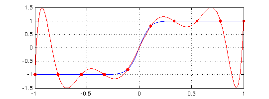
Perhaps this doesn't look too bad, but here is what happens for degree 19. Note the vertical scale.
s = linspace(-1,1,20); p = interp1(s,f); hold off plot(f), hold on, plot(p,'r'), grid on, plot(s,p(s),'.r')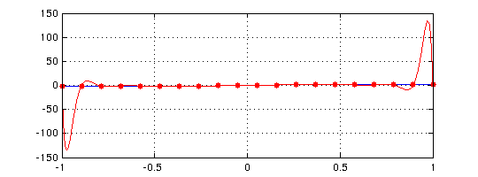
Approximation experts will know that one of the tools used in analyzing effects like this is known as the Lebesgue function associated with a given set of interpolation points. Chebfun has a command "lebesgue" for computing these functions. The problem with interpolation in 20 equispaced points is reflected in a Lebesgue function of size 10^4 -- note the semilog scale:
clf, semilogy(lebesgue(s))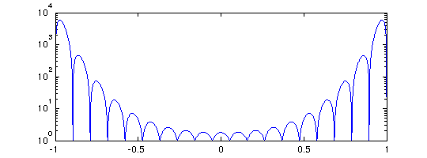
For 40 points it is much worse:
semilogy(lebesgue(linspace(-1,1,40)))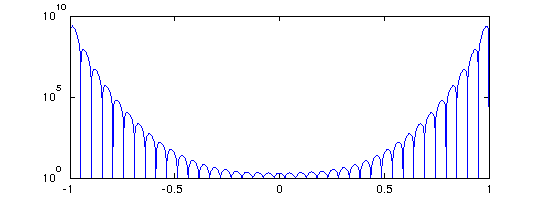
As the degree increases, polynomial interpolants in equispaced points diverge exponentially, and no other method of approximation based on equispaced data can completely get around this problem [Platte, Trefethen and Kuijlaars 2011].
4.8 Rational approximations
Chebfun contains four different programs, at present, for computing rational approximants to a function f. We say that a rational function is of type (m,n) if it can be written as a quotient of one polynomial of degree at most m and another of degree at most n.
To illustrate the possibilities, consider the function
f = chebfun('tanh(pi*x/2) + x/20',[-10,10]);
length(f)
plot(f)
ans = 350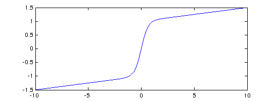
We can use the command "chebpade", developed by Ricardo Pachon, to compute a Chebyshev-Pade approximant, defined by the condition that the Chebyshev series of p/q should match that of f as far as possible [Baker and Graves-Morris 1996]. (This is the so-called "Clenshaw-Lord" Chebyshev-Pade approximation; if the flag 'maehly' is specified the code alternatively computes the linearized variation known as the "Maehly" approximation.) Chebyshev-Pade approximation is the analogue for functions defined on an interval of Pade approximation for functions defined in a neighborhood of a point.
[p,q] = chebpade(f,40,4); r = p./q;
The functions f and r match to about 8 digits:
norm(f-r)
plot(f-r,'r')
ans =
4.884651558905774e-09
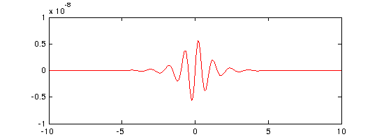 Mathematically, f has poles in the complex plane at +-i, +-3i, +5i, and so on. We can obtain approximations to these values by looking at the roots of q:
roots(q,'complex')
ans =
0 - 1.000000750727759i
0 + 1.000000750727759i
0 - 3.004284960235364i
0 + 3.004284960235364i
A similar but perhaps faster and more robust approach to rational interpolation is encoded in the command "ratinterp", which computes a type (m,n) interpolant through m+n+1 Chebyshev points (or, optionally, a different set of points). This capability was developed by Ricardo Pachon and Pedro Gonnet [Pachon & Gonnet 2010]. The results are similar:
[p,q] = ratinterp(f,40,4);
r = p./q;
norm(f-r)
plot(f-r,'m')
ans =
3.501142322723392e-07
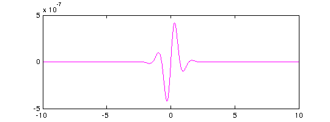 Again the poles are not bad:
roots(q,'complex')
ans =
0 - 1.000011080933511i
0 + 1.000011080933511i
0 - 3.010648606000841i
0 + 3.010648606000841i
The third and fourth options for rational approximation, as mentioned in Section 4.6, are best approximants computed by "remez" and Caratheodory-Fejer approximants computed by "cf" [Trefethen & Gutknecht 1983, Van Deun & Trefethen 2011]. As mentioned in Section 4.6, CF approximants often agree with best approximations to machine precision if f is smooth. We explore the same function yet again, and this time obtain an equioscillating error curve:
[p,q] = cf(f,40,4);
r = p./q;
norm(f-r)
plot(f-r,'c')
ans =
2.999209244012242e-10
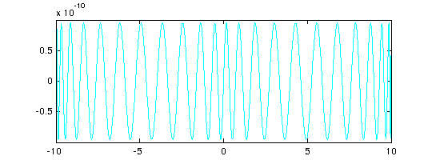 And the poles:
roots(q,'complex')
ans = -0.000000000000002 - 1.000000066684930i -0.000000000000002 + 1.000000066684930i 0.000000000000009 - 3.001936139321728i 0.000000000000009 + 3.001936139321728i
It is tempting to vary parameters and functions to explore more poles and what accuracy can be obtained for them. But rational approximation and analytic continuation are very big subjects and we shall resist the temptation.
4.9 References
[Baker and Graves-Morris 1996] G. A. Baker, Jr. and P. Graves-Morris, Pade Approximants, 2nd ed., Cambridge U. Press, 1996.
[Battles & Trefethen 2004] Z. Battles and L. N. Trefethen, "An extension of Matlab to continuous functions and operators", SIAM Journal on Scientific Computing 25 (2004), 1743-1770.
[Berrut & Trefethen 2005] J.-P. Berrut and L. N. Trefethen, "Barycentric Lagrange interpolation", SIAM Review 46 (2004), 501-517.
[Boyd 2001] J. P. Boyd, Chebyshev and Fourier Spectral Methods, 2nd ed., Dover, 2001.
[Canuto et al. 2006/7] C. Canuto, M. Y. Hussaini, A. Quarteroni and T. A. Zang, Spectral Methods, 2 vols., Springer, 2006 and 2007.
[Cheney 1966] E. W. Cheney, Introduction to Approximation Theory, McGraw-Hill 1966 and AMS/Chelsea, 1999.
[Davis 1963] P. J. Davis, Interpolation and Approximation, Blaisdell, 1963 and Dover, 1975.
[Ehlich & Zeller 1966] H. Ehlich and K. Zeller, "Auswertung der Normen von Interpolationsoperatoren," Math. Annalen 164 (1966), 105-112.
[Fox & Parker 1966] L. Fox and I. B. Parker, Chebyshev Polynomials in Numerical Analysis, Oxford U. Press, 1968.
[Helmberg & Wagner 1997] G. Helmberg & P. Wagner, "Manipulating Gibbs' phenomenon for Fourier interpolation," Journal of Approximation Theory 89 (1997), 308-320.
[Higham 2004] N. J. Higham, "The numerical stability of barycentric Lagrange interpolation", IMA Journal of Numerical Analysis 24 (2004), 547-556.
[Lanczos 1956] C. Lanczos, Applied Analysis, Prentice-Hall, 1956 and Dover, 1988.
[Lorentz 1986] G. G. Lorentz, The Approximation of Functions, American Mathematical Society, 1986.
[Mason & Handscomb 2003] J. C. Mason and D. C. Handscomb, Chebyshev Polynomials, CRC Press, 2003.
[Mastroianni & Szabados 1995] G. Mastroianni and J. Szabados, "Jackson order of approximation by Lagrange interpolation," Acta. Math. Hungar. 69 (1995), 73-82.
[Meinardus 1967] G. Meinardus, Approximation of Functions: Theory and Numerical Methods, Springer, 1967.
[Pachon & Gonnet 2010] R. Pachon and P. Gonnet, manuscript in preparation.
[Pachon & Trefethen 2009] R. Pachon and L. N. Trefethen, "Barycentric-Remez algorithms for best polynomial approximation in the chebfun system", BIT Numerical Mathematics 49 (2009), ?-?.
[Platte, Trefethen & Kuijlaars 2011] R. P. Platte, L. N. Trefethen and A. B. J. Kuijlaars, "Impossibility of fast stable approximation of analytic functions from equispaced samples", SIAM Review, to appear.
[Powell 1981] M. J. D. Powell, Approximation Theory and Methods, Cambridge University Press, 1981.
[Rack & Reimer 1982] H.-J. Rack and M. Reimer, "The numerical stability of evaluation schemes for polynomials based on the Lagrange interpolation form", BIT Numerical Mathematics 22 (1982), 101-107.
[Rivlin 1974] T. J. Rivlin, The Chebyshev Polynomials, Wiley, 1974 and 1990.
[Runge 1901] C. Runge, "Ueber empirische Funktionen und die Interpolation zwischen aequidistanten Ordinaten", Zeitschrift fuer Mathematik und Physik 46 (1901), 224-243.
[Salzer 1972] H. E. Salzer, "Lagrangian interpolation at the Chebyshev points cos(nu pi/n), nu = 0(1)n; some unnoted advantages", Computer Journal 15 (1972),156-159.
[Trefethen 2000] L. N. Trefethen, Spectral Methods in Matlab, SIAM, 2000.
[Trefethen 2010] L. N. Trefethen, Approximation Theory and Approximation Practice, book in preparation.
[Trefethen & Gutknecht 1983] L. N. Trefethen and M. H. Gutknecht, "The Caratheodory-Fejer method for real rational approximation", SIAM Journal on Numerical Analysis 20 (1983), 420-436.
[Van Deun & Trefethen 2011] J. Van Deun and L. N. Trefethen, A robust implementation of the Caratheodory-Fejer method, BIT Numerical Mathematics, submitted.